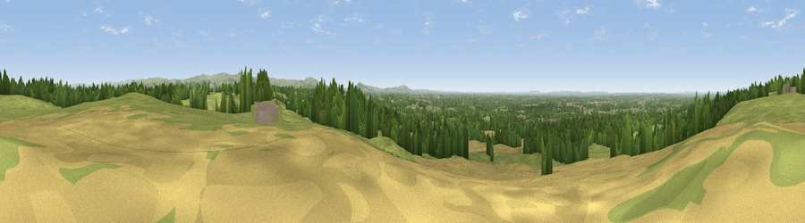

Viewpoint near Over Alderley
#9668 in England · top 16% of its area beats it · near Over Alderley · path 236 mWhere it is
The exact computed spot (SJ 86075 76075). Click the marker for map links.
Public access: the nearest public right of way is about 236 m away — the final stretch may cross private land. Computed from Natural England's CRoW access layer and OpenStreetMap rights of way — not the legal definitive map. Always verify locally.
The view, rendered

A 360° render of this exact spot computed from the terrain model, tree cover and land cover — summer colours, afternoon light, calibrated against photographs of famous viewpoints. Real trees, hedges and buildings will differ in detail.
The panorama
Grey silhouette: terrain skyline in each direction (720 bearings, Earth curvature and refraction included). Dashed green: skyline with trees (+15 m) and buildings (+8 m) as obstacles. Blue strip: how far the ground is visible on each bearing.
Where the view opens
Wedge length = distance to the farthest visible ground on that bearing (vegetation-aware). Rings at 10, 25 and 50 km.
What fills the view
64% grassland · 21% woodland · 12% cropland · 3% built-up
Angular shares of the visible panorama (visual magnitude), not map area. Landscape diversity 0.43 (0–1 Shannon).
Key numbers
More beautiful places nearby
The staircase of upgrades: each row has a higher view potential than everything closer. Driving times are estimates from straight-line distance, calibrated against real road routing — check an actual route before setting out.
| Place | Direction | Drive | Score |
|---|---|---|---|
| Stormy Point | N · 2 km | ~5 min | 64.0 |
| Viewpoint near Alderley Edge | NNW · 2 km | ~6 min | 68.8 |
| Viewpoint near Bollington | E · 8 km | ~16 min | 69.7 |
| Viewpoint near Langley | ESE · 8 km | ~16 min | 70.2 |
| Viewpoint near Langley | ESE · 9 km | ~18 min | 71.5 |
| Viewpoint near Langley | ESE · 10 km | ~20 min | 71.6 |
| Croker Hill | SE · 11 km | ~21 min | 72.7 |
| Viewpoint near Timbersbrook | SSE · 13 km | ~24 min | 74.4 |
53.28146, -2.21031 · source: screening · position refined by local search. Computed location — check access rights before visiting.